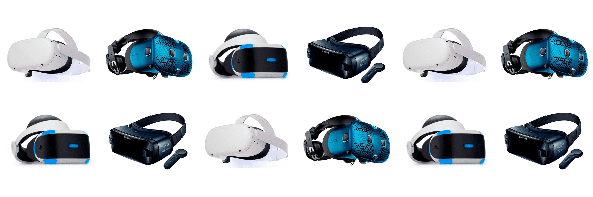

Descripción básica:
- ¿Qué son las gafas de realidad virtual?
¡Ponte las gafas y prepárate para entrar en otro mundo! Las gafas de realidad virtual te llevan directo a donde quieras, sin importar si es un planeta lejano, una aventura submarina o una montaña rusa vertiginosa. ¡Gira, salta y explora! Cada movimiento tuyo se convierte en parte de la experiencia: mira a tu alrededor y descubre que todo lo que ves, oyes y sientes parece increíblemente real. Desde videojuegos que te harán sentir como un héroe hasta conciertos en primera fila o clases interactivas, las gafas de realidad virtual transforman la diversión, el aprendizaje y las experiencias. ¡Elige tu aventura y vive lo imposible!
Las gafas de realidad virtual ofrecen inmersión total en entornos virtuales, permitiendo experiencias únicas en juegos y educación. Facilitan el aprendizaje mediante simulaciones seguras y son útiles en entrenamientos deportivos y rehabilitación. Además, enriquecen el entretenimiento y mejoran la conexión entre personas a distancia, convirtiéndolas en una herramienta versátil y revolucionaria.

Las primeras ideas de realidad virtual surgieron en la década de 1960. Uno de los primeros dispositivos de realidad virtual fue el Sensorama, creado en 1962 por Morton Heilig, un cineasta estadounidense. Este dispositivo permitía a los usuarios experimentar una simulación multisensorial, combinando imágenes en 3D, sonido, vibración y olor. Más adelante, en 1968, el científico informático Ivan Sutherland creó el primer sistema de visualización montado en la cabeza, conocido como Sword of Damocles. Este dispositivo se consideró la primera experiencia de "realidad virtual" y se usaba para simular entornos 3D, aunque era muy básico en comparación con la tecnología actual y bastante incómodo de usar.
La realidad virtual empezó a hacerse más popular en la década de 1980 y principios de los 90, con el desarrollo de dispositivos de empresas como VPL Research, fundada por Jaron Lanier. Lanier es conocido por popularizar el término "realidad virtual". Sin embargo, estos dispositivos eran costosos y limitados, por lo que su uso se mantuvo principalmente en laboratorios e investigaciones.
No fue hasta la década de 2010 que la realidad virtual comenzó a llegar al mercado masivo, gracias al desarrollo de tecnologías más avanzadas y accesibles. En 2012, Oculus Rift lanzó una exitosa campaña en Kickstarter, lo que marcó el inicio de una nueva era para la realidad virtual. A partir de ese momento, compañías como HTC, Sony y Samsung comenzaron a desarrollar sus propios dispositivos VR, acercando esta tecnología al público general.
Hoy en día, las gafas de realidad virtual se utilizan ampliamente en videojuegos, simulaciones de entrenamiento, educación y experiencias de entretenimiento, siendo una de las tecnologías más inmersivas y prometedoras del mercado.

Hoy en día, conseguir unas gafas de realidad virtual es más accesible que nunca, gracias a la variedad de opciones y a la facilidad de compra. El primer paso es investigar un poco los modelos disponibles, ya que cada uno ofrece características y experiencias diferentes. Los modelos más populares incluyen el Oculus Quest, HTC Vive, PlayStation VR y Valve Index, todos con ventajas específicas según el uso y el presupuesto que tengas en mente. Con precios que van desde los 300 € hasta más de 1,000 €, definir un presupuesto puede ayudarte a reducir las opciones y elegir un modelo que se ajuste a tus expectativas.
Una vez elegido el modelo, puedes adquirirlo en tiendas de electrónica, grandes superficies o en línea, a través de plataformas como Amazon o los sitios web de los propios fabricantes. Si optas por un modelo que requiera conectarse a una computadora, asegúrate de que tu PC cumpla con los requisitos necesarios para soportar la realidad virtual, como una tarjeta gráfica adecuada y suficiente capacidad de procesamiento.
Antes de completar la compra, es útil leer reseñas de otros usuarios para tener una visión clara de la experiencia que ofrecen las gafas que has seleccionado. Además, si no tienes prisa, podrías esperar eventos de descuento como Black Friday, donde suelen ofrecerse grandes rebajas en tecnología.
Por último, considera los accesorios adicionales que podrías necesitar, como controladores, auriculares o juegos específicos, que enriquecerán tu experiencia de realidad virtual. Con estos pasos, tendrás todo lo necesario para comenzar a explorar el mundo virtual y disfrutar de una tecnología que ya está al alcance de todos.
Para más información pulse aquí